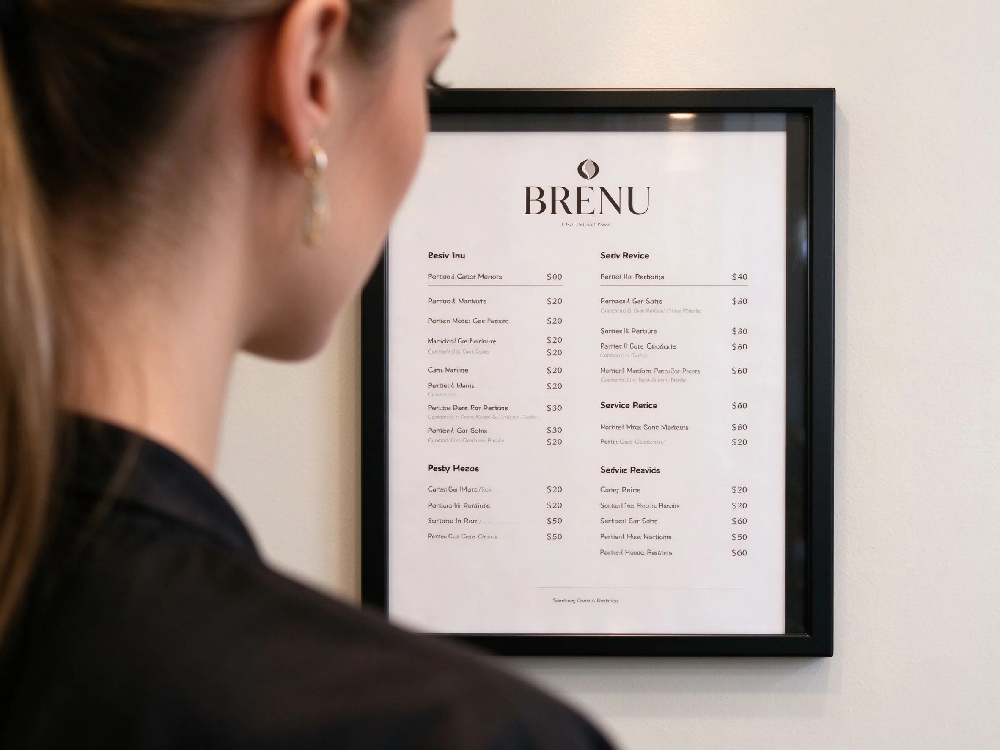

美甲菜單設計是什麼？中階入門攻略
菜單不是把服務寫一寫就好，它要讓客人『3 秒看懂、5 分鐘決定、不會加價加到翻臉』。
菜單設計原理與辨識重點：美甲師不說的分類清楚
一張好的美甲菜單，重點是分類清楚、價格透明、加購項目白話。例如先分『凝膠基礎』、『凝膠設計』、『保養／卸甲』三大塊，每個項目寫清楚是單色、貓眼、還是法式，加長加多少、雕花加多少。最怕的是菜單上只寫『凝膠 $800』，做到一半客人發現『你這款貓眼要再加 200？』——當場就炸。
誰適合做菜單設計？列價目表對號入座
開店前要設計菜單、或菜單已經用了好幾年卻常被客人問到傻眼的美甲師；想要線上預約單頁乾淨一點的獨業者也適合。
菜單設計美甲施作步驟：分類+計價
第一步分類：基礎保養、凝膠單色、凝膠設計、延甲、卸甲。第二步每個分類訂一個基礎價，例如單色 $800、設計款 $1200。第三步把加購項目列出：延長＋$300、華麗彩繪＋$500、深層保養＋$200。第四步在菜單最下面寫清楚『以上為全手報價』『卸甲需另計』『不包飾品特殊造型另議』。最後印出來放在鏡子旁，線上也貼一份。
菜單設計優缺點分析：美甲持久度與傷甲評估
| 優點 | 說明 |
|---|---|
| 清楚的菜單能減少 80% 的現場爭議；客人預期被满足，你施作也專心，不會邊做邊被問『這個要不要加錢』。 | 是通用流派的招牌，中階就能上手 |
| 缺點 | 說明 |
| 一開始會覺得『寫這麼清楚是不是沒彈性』，某些特殊造型很難訂價；但長期下來，彈性是贏得來的不是讓出來的。 | 前置與最雷的三種菜單：一種是『只有最低價、其他現場議』，客人覺得被坑；一種是『價格密密麻麻、連分類都沒有』，客人看到頭痛；還有一種是『寫「依複雜度報價」』，這句等於告訴客人你不誠實。沒顧好會打折 |

菜單設計新手雷區：價目透明與常見錯誤
注意：最雷的三種菜單：一種是『只有最低價、其他現場議』，客人覺得被坑；一種是『價格密密麻麻、連分類都沒有』，客人看到頭痛；還有一種是『寫「依複雜度報價」』，這句等於告訴客人你不誠實。
菜單設計和其他美甲做法的差別比較
菜單設計跟定價策略不一樣：定價是『這個項目值多少錢』，菜單是『把這個價格講得多清楚、多吸引人』。同樣一個 $800 的服務，菜單寫得好，客人覺得划算；寫得亂，客人覺得被宰。
菜單設計美甲常見問題 FAQ
Q：要做頂級方案嗎？ A：要。菜單裡放一個『進階設計款 $1800 起』，會讓中間價格的方案看起來特別合理。客人不一定要買，但有比對就有信任感。
Q：加購項目要不要寫？ A：一定要寫，而且寫在最清楚的位置。客人最怕『被事後加價』，你主動講明，反而加分。
Q：線上預約菜單怎麼放？ A：建議分成兩頁：一頁報價、一頁作品。報價講清楚、作品讓人選款，別把兩件事混在一起。